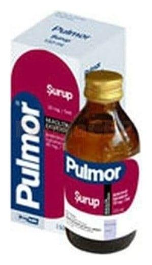

Pulmor 30 mg/5 ml Şurup, 150 ml

Ne için kullanılır
KT · Bölüm 1 PULMOR, balgam salgısını sulandıran ve salgılanmasını kolaylaştıran balgam söktürücü bir ilaçtır. Bu sayede balgamın kolayca atılmasını sağlayarak solunum güçlüğünü giderir ve öksürüğü azaltır. PULMOR, 150 ml şurup içeren, renkli cam şişelerde, 15 ml’ lik ölçek ile birlikte sunulur. Renksiz veya hafif sarımsı berrak şurup görünümündedir. PULMOR, balgamın koyu ve yapışkan olması ile birlikte olan ani ve süreğen solunum yolu hastalıklarında balgam söktürücü olarak kullanılır.